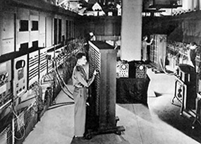
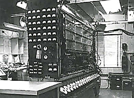

Der Rechner ENIAC wurde 1945 von John Presper Eckert und John W. Mauchly fertiggestellt. Der "Electronic Numerical Integrator And Computer" bestand aus 18000 Elektronenröhren und konnte mehrere Multiplikationen pro Minute durchführen. Da die Programme nicht von ihm selbst gespeichert wurden, musste ENIAC für jedes neue Problem neu verschaltet werden. 1945 entwickelte John von Neumann mit anderen Wissenschaftlern in den USA die "von Neumann-Architektur". Sie entstand in Zusammenhang mit Berechnungen für die Entwicklung der Atom- und der Wasserstoffbombe. ENIAC war durch seinen komplizierten Aufbau zu langsam. Die Lösung war der Rechner EDVAC(Electronic Discrete Variable Automatic Computer), der die Instruktionen neben den Daten im selben elektronischen Speicher aufbewahren konnte. Dieses "stored program"-Prinzip ist eine grundlegende Komponente der "von Neumann"-Architektur, die EDVAC zu einer "Allzweck-Maschine" machte, und damit den kommerziellen Erfolg nachfolgender Computer-Generationen begründete.